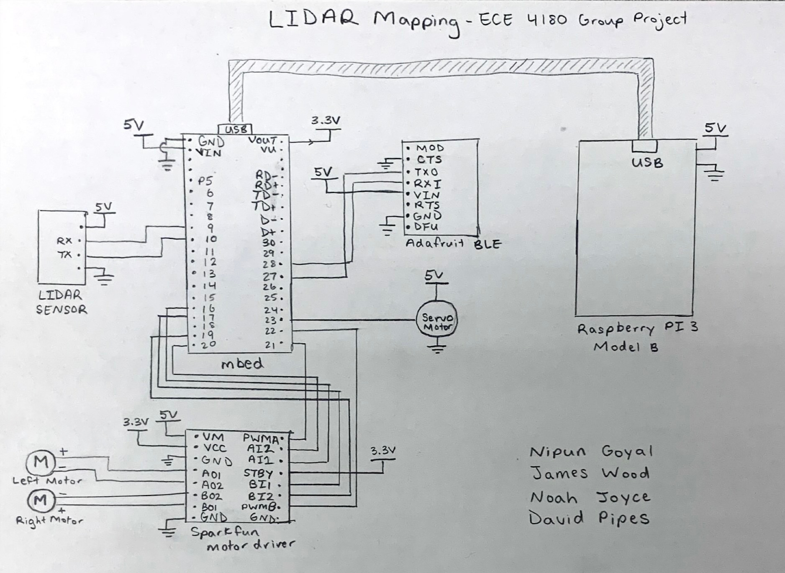
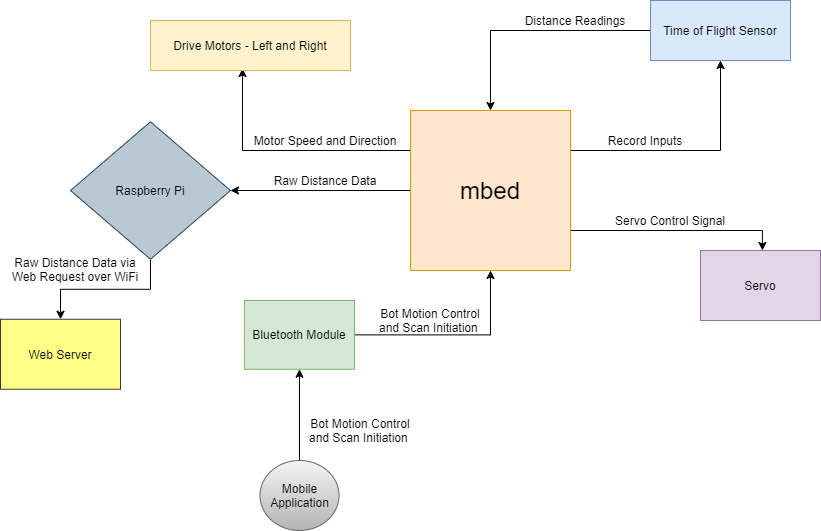
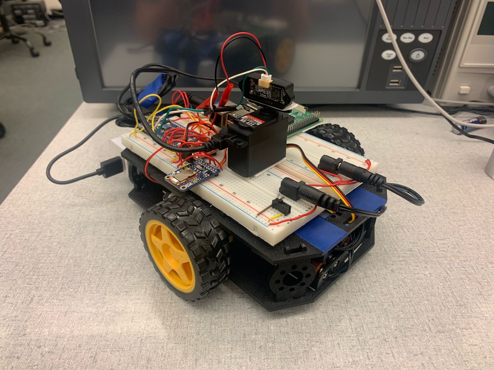
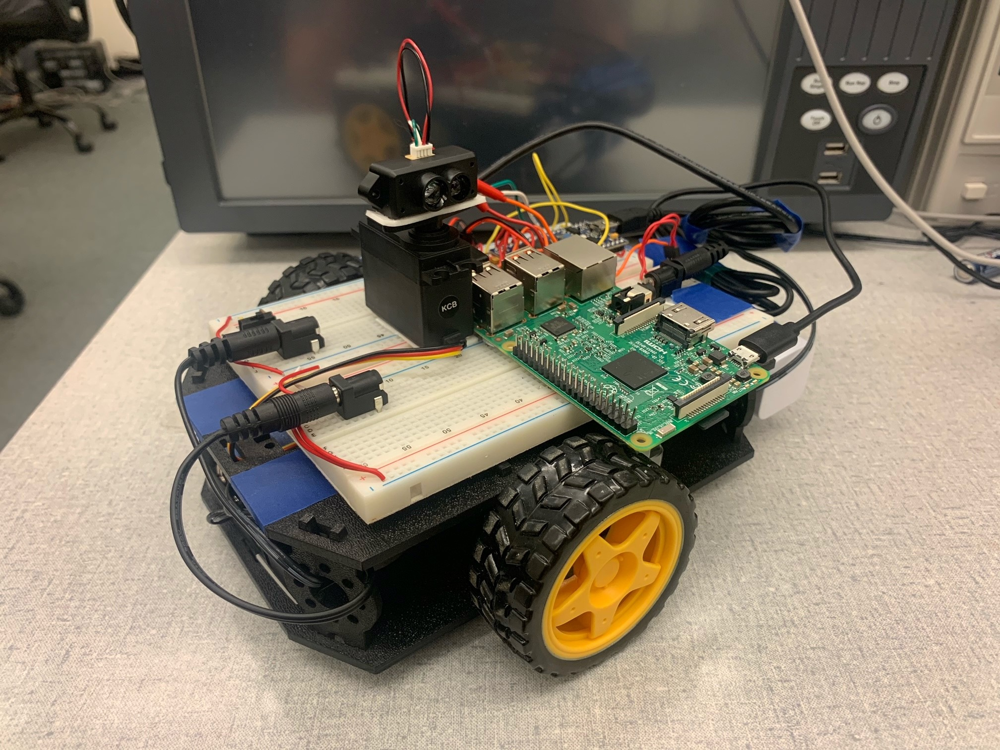
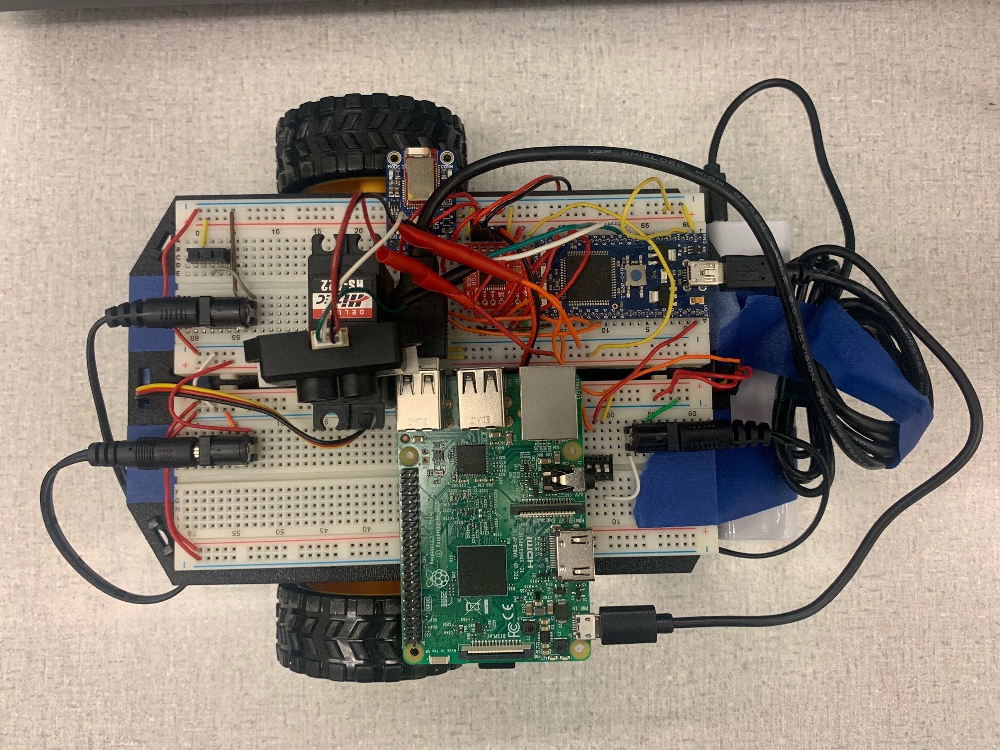

A bluetooth-controlled mobile platform that uses a time of flight LiDAR sensor mounted on a servo to perform 180-degree sweep in order to map its immediate surroundings.
Mapping data is sent over a USB-serial connection from the mbed controller to an onboard Raspberry Pi.
The Pi sends an HTTP POST request to a web server, which then processes the raw data into a bitmap image for live viewing.
The mbed driver code handles user input from the bluetooth app as well as the control of the LiDAR/Servo combo and sending of mapping data over serial to the Raspberry Pi. The arrow keys on the app are used to control the robot's movement and the 1 button is used to initiate a sweep.
When the user requests a LiDAR sweep, samples are taken every 1.8 degrees (the granularity of the servo) with the LiDAR. The distances it reads combined with the angle that the LiDAR is currently at is used to calculate the relative (x, y) position of the sampled position.
The sweep proceeds from 0-90 degrees and then pauses, allowing the mapped data to be transferred over serial to the Pi. This is because the resolution of the final mapping image (240x120 pixels) is too large to fix within the mbed's onboard RAM. Therefore, two 120x120 images are mapped and sent to the Pi separately.
The Pi waits in a loop to receive the mapping data from the mbed, and upon receiving a complete set of data, creates four temporary files, each containing a quarter of the mapped data. This restriction is created due to memory restrictions related to calling Python code from within C++.
The C++ driver code on the Pi then transitions to Python code, where the data from the temporary files is sent in four separate POST requests to the webserver. The Python code wraps the data within a json data structure.
Finally, the web server receives the POST requests and reconstructs the data that was sent. Once this happens, the data is converted into a black and white bitmap format using Pillow. The image is then saved locally and is displayed on the webserver. This is how the images are displayed in real time as the webserver processes them.
The location of the robot is the bottom center of the bitmap image. Each pixel represents 10cm.


mbed Driver Code: bot_LIDAR_PI.cpp
Raspberry Pi Serial Handler Code: mbed_serial.cpp
Raspberry Pi HTTP POST Code: post_data.py
Web Server Code: webserver.py


